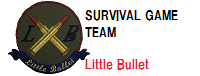
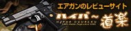

リンク集
お世話になっているサイトや店舗、メーカーなどのリンク集。追加の要望は恐れ入りますがトップページの「お問い合わせ」よりご連絡ください。
当サイトはリンクフリーです。
もしリンクしていただけるようでしたら、是非下記のバナーをお使い下さいませ。

各サイト
| サイト名 | 管理人 | 説明 |
| ハイパー道楽  |
YAS | エアガンやフィールド、装備などのレビューを始め、様々な情報が掲載されているサイト。 初心者からベテランまで楽しめること間違いなし。サバゲーのサイトといえばココ！ |
| サバイバルゲーム・バリエーション・データベース |
サバゲーの様々なルールが掲載、紹介されているサイト。 定番系から変則ルールまで幅広く網羅されている。 |
|
| 迷彩図鑑 |
各国迷彩パターンを画像化した素材を公開しているサイト。 ページの背景に自衛隊新型迷彩、USMC新型迷彩(砂漠型)、フレックタン迷彩などをお借りしております。 |
|
| TAG index |
HP作成や編集に困ったときに必ず見ている、HTMLやCSS、JavaScript、カラーチャートなどのレファレンスサイト。 とても助かっております… |
|
| MEDIAGUN DATABASE |
映画やドラマ、アニメなどの様々なメディアに登場した銃器の紹介を行っているサイト。 「あの映画に出てきた銃って何だっけ…」という探し方ができ、銃器の説明も細かい。 |
| 企業 |
| 企業名 | 主な業種 | 説明 |
| 東京マルイ | 電動ガン ガスガンetc. |
電動ガンを世界で最初に作り、その基礎を作ったメーカー。 リアリティでは他社に譲るが、非常に安定した性能のエアガンを世に送り出している。 初心者は取り敢えずここの電動ガンを買えばよし。 |
| KSC | 電動ガン ガスガン |
かのMGCの血を継ぐメーカー。 少々強度が低いが、仕上げも綺麗で非常にリアルなエアガンに定評がある。 新機構システム7以降は、実射性能も向上している。 |
| ウェスタンアームズ |
ガスガン | マグナブローバック機構で知られるガスガンメーカー。 リコイルの重さに定評があり、ベレッタ社のパテントを取得したことでも有名。 アニメやゲーム、映画をイメージしたモデルが非常に多い。 |
| マルゼン |
エアコキ ガスガン |
6mmBB弾を実用化したメーカー。 精密射撃銃「APS」やCA870、ワルサー社の銃のエアガンが有名。 ワルサー本社の完全協力を受けており、同社エアガンの質ではダントツ。 |
| マルシン工業 |
ガスガン | 8mmBB弾を規格化したことで知られるメーカー。 モーゼルC96/M712、SIG P210、M1ガーランドなどマニア受けするモデルが多い。 正直に言えばゲーム向きとはまず言えない性能だが、とても魅かれるラインナップ。 |
| タナカワークス |
ガスガン | ガスブローバックガンを初めて実現したメーカー。 ガスライフルやガスリボルバーで知られており、根強いファンが多い。 S&W社の商標使用権を得ており、S&Wの銃の再現度は群を抜いている。 |
| KTW |
エアコキ 電動ガン |
「未開の銃に、挑戦。」というスローガンを掲げるメーカー。 そのモットーに恥じず、旧日本軍の銃などを中心に独特のラインナップ。 やや高価なものが多いが、クオリティは非常に高い。 |
| CAW |
エアコキ 電動ガン |
エアガンというよりは専らモデルガンのメーカーとして有名な会社。 やたらグレネードランチャーのラインナップが豊富。 現在はかの悪名高きM134ミニガンが有名。 |
| タニオ・コバ |
ガスガン | モデルガンデザイナー、小林太三氏がMGC退社後に創立したメーカー。 発火式モデルガンGM-7が最も有名だが、VP70やルガー10/22などでも知られる。 カスタムパーツ「ツイストバレル」やUSP、M4A1のガスブロを販売している。 |
| ショップ | ||||||||||||||||||||||||||||||
|